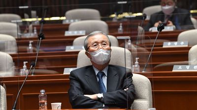

김종인 사퇴 아니였다… 野선대위 “소통 착오로 잘못 전달”

국민의힘 선거대책위원회는 3일 “김종인 총괄선대위원장이 사의를 표명했다”는 발표에 대해 “소통 착오로 잘못
공지됐다. 혼란을 드려 죄송하다”고 했다. 앞서 선대위는 이날 오후 5시 15분 “총괄선대위원장, 상임선대위원장,
공동선대위원장, 총괄본부장을 비롯해 새시대준비위원장까지 모두가 후보에게 일괄해 사의를 표명했다”고 언론에 공지했다. 하지만
2시간이 채 지나지 않아 오후 ...